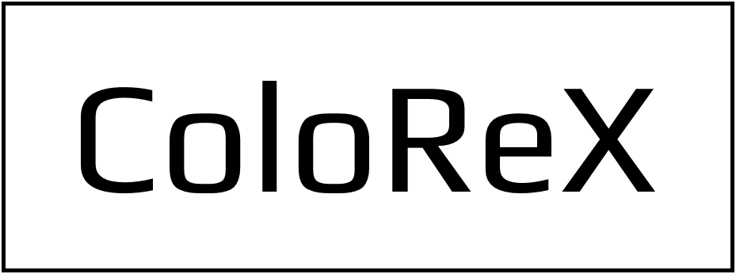
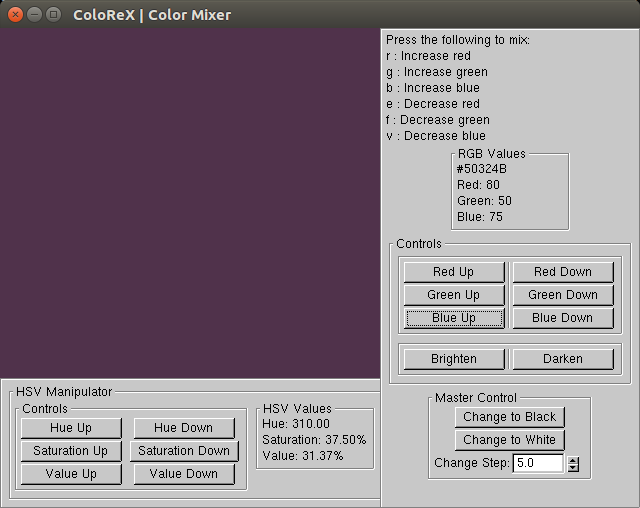

Documentation for usage
Introduction
ColoReX is a GLUI OpenGL application that gives user the power to find colors for designing (of all kinds) by manipulating color channels. It supports RGB and HSV color models.
The Interface

The above image shows the interface of ColoReX application running on Ubuntu Linux 16.04. We can see the following highlights
- The Color Window: GLUT Window that show the current color.
- The RGB Manipulator Controls: These buttons are used to vary color by RGB channels.
- The HSV Manipulator Controls: These buttons are used to vary color by HSV channels.
- The Master Control: It resets the color and gives a spinner to change the step of increment/decrement
The RGB Manipulator
- Keyboard Shortcuts: The application provides shortcuts to all the controls provided by the buttons in the RGB controls
- RGB Values: This panel shows HEX code and individual channel values for the current color.
- Red Up/Red Down: Use this button to increase/decrease the Red Channel value by Change Step [defined later].
- Green Up/Green Down: Use this button to increase/decrease the Green Channel value by Change Step.
- Blue Up/Blue Down: Use this button to increase/decrease the Blue Channel value by Change Step.
- Brighten: Use this button to increase the values of all three channels by Change Step simultaneously.
- Darken: Use this button to decrease the values of all three channels by Change Step simultaneously.
The HSV Manipulator
- HSV Values: This panel shows individual channel values for the current color.
- Hue Up/Hue Down: Use this button to increase/decrease the Hue Channel value by Change Step [defined later].
- Saturation Up/Saturation Down: Use this button to increase/decrease the Saturation Channel value by Change Step.
- Value Up/Value Down: Use this button to increase/decrease the Value Channel value by Change Step.
Master Control
- Change to black: Resets color to black (#000000).
- Change to white: Resets color to white (#FFFFFF).
- Change Step: Set this value to change the amount of increment/decrement that happens on one click of a Up/Down control. It can be set to any value between 0.01 and 100.00
- The application can be closed via the ESC key.
Bugs and fixes
- In case the keyboard shortcuts are not working, click on the Color window once, wait for the feedback and try again.
- In case the application doesn't close, you may need to kill the application using Task Manager/process-kill.